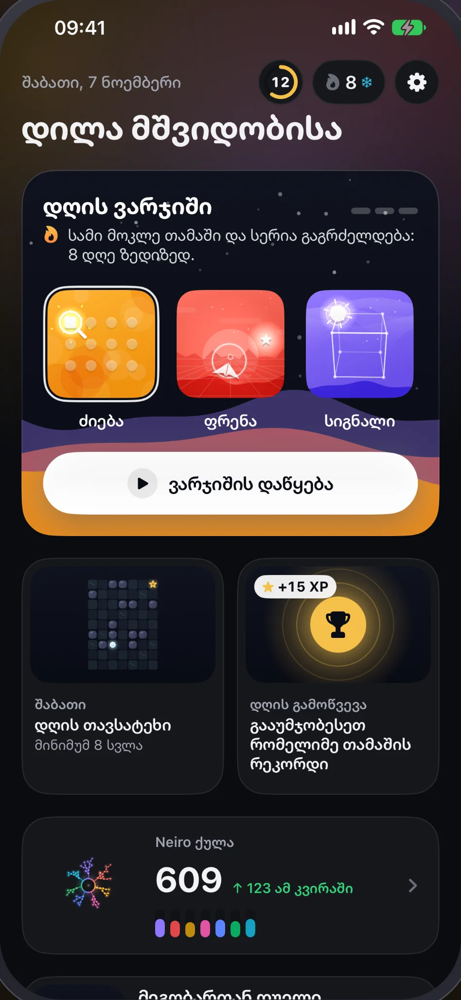
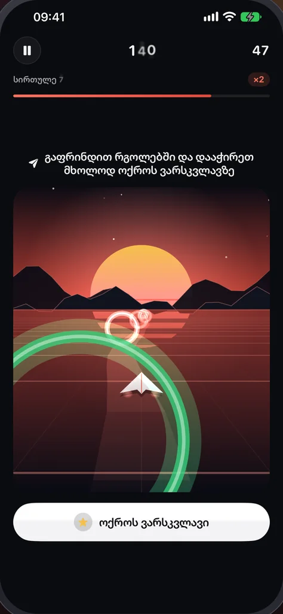
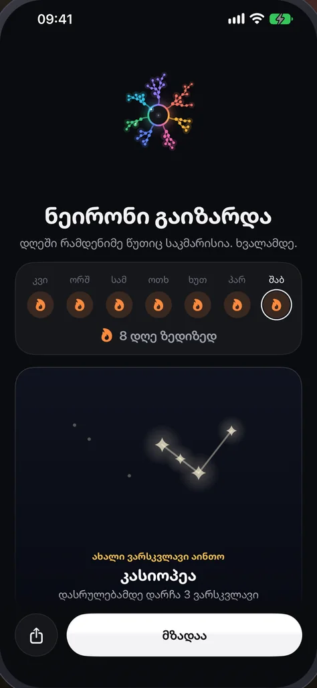
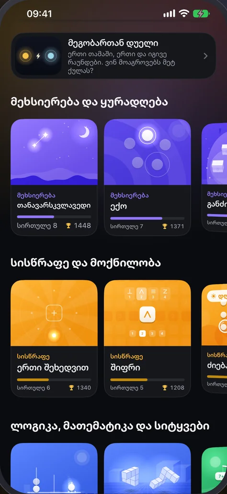
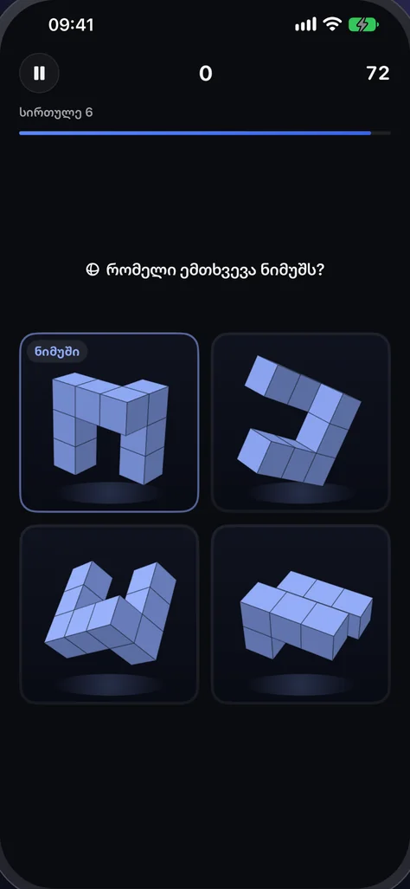
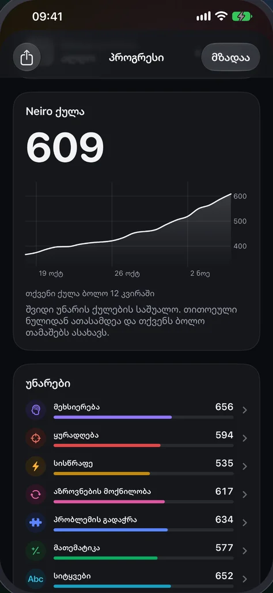
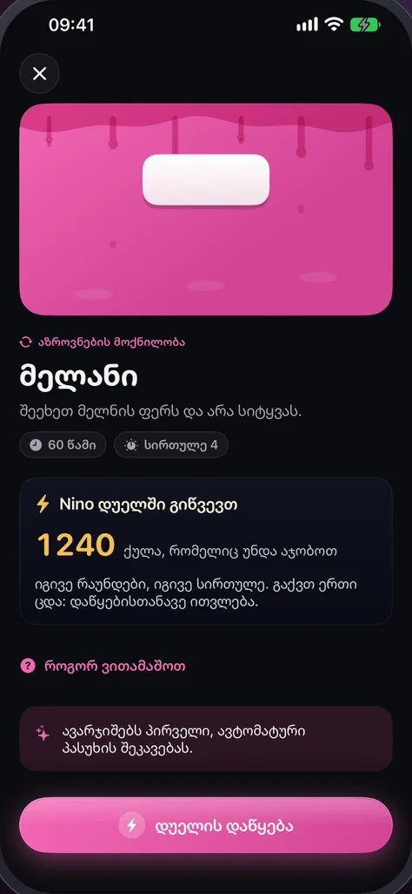
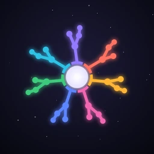

Constellation
Stars light up on the night sky. Tap where they were.
Score0
Difficulty1
Round0/6
Six rounds. Remember where the stars light up.
Brain training for iPhone
Three short games a day, chosen for you from 28 across seven skills. Every game you play grows your neuron, and every day you finish lights a star.

A day in Neiro
A little every day works best. So each day has a shape: three short games, a puzzle and a challenge if you want more, and a star at the end.
Every day Neiro plans three games from three different skills. The skills you want to get better at come first, but one trained in the last two days waits its turn, so a week covers all seven.
Each game starts with a practice round the first time, so you learn as you play.

One puzzle a day, the same board for everyone, gentle on Mondays and hardest on Sundays. And one small challenge on top, like six right in a row, or a game outside today's three.
The puzzle is planning for fun. It adds to your level, never to your skill scores.
Finish the day and your neuron grows a node for every game. Then your streak ticks up and tonight's star lights in your sky, seven to a constellation.
Every seven days in a row earns a streak freeze, for the day life gets in the way.

Screens shown in Georgian, one of Neiro's two languages. The app is in English and Georgian, and switches between them without a restart.
The games
Every game is a short, playable version of a task scientists use to study the mind. Each one adapts to you, and each says in one everyday sentence what it trains.
Seven games are open from the start, one for every skill. Each new level opens one more, until all 28 are yours at level 22. Choose any game to see what it trains.


Drawn with care
Try it here
Short versions of two Neiro games, played by the app's own rules. Watch the difficulty climb when you get them right, and ease off when you don't.
Stars light up on the night sky. Tap where they were.
Six rounds. Remember where the stars light up.
Tap the colour of the ink, not the word.
Thirty seconds. Framed words ask for what the word says.
In the app every game runs longer, adds to your skill scores, grows your neuron, and starts a step below where you finished last time, as a warm up.
How it works
Each game gets harder when you're doing well and easier when you're not. So you always practise right at the edge of what you can do, which is where practice works best.
An example game of Ink
Four right in a row step it up. Two misses step it down.
The same idea runs every game: a staircase, borrowed from how researchers measure perception. Everyone settles where practice is hardest but still winnable.

Every game is a short, playable version of a task scientists use to study the mind. Echo comes from the Corsi block test, Compass from the flanker task, Towers from the Tower of London.
Each skill scores from 0 to 1,000, from the difficulty you reach and how accurate you are in recent games. It compares you only with yourself.
Your level says how much you've trained, never how clever you are. Experience comes from playing, not from scores, and each level opens a new game.
Where the games come from
Your neuron
Seven branches, one for each skill. Every game you play grows its skill's branch by one node, so you can see what you train most and what could use more.
Play a game in
0 games played
Grown here by the same rules as in the app. Each player's neuron comes from a seed of their own, so no two look alike.
Your sky
Seven stars make a constellation, twelve in all, drawn after the real figures. A day you miss never takes a star away. The next one simply waits for you.
Three games keep it going. It survives until the end of the next day, so it isn't lost at breakfast.
Every seven days in a row earns a streak freeze, and you can hold two. A frozen day carries the streak across.
Your sky is worked out from the days you trained. A missed day never dims a star you already lit.
Every day, and with friends
Daily puzzle
An orb slides across a frozen pond until a rock or the edge stops it. Get it into the star in as few moves as you can. Everyone plays the same board on the same date, and everyone's first solve goes on one board, kept by Game Center.
Fewest moves it takes, from Monday to Sunday.
Swipe, use the arrow keys, or tap the arrows.
Duels
Pick a game and play it first. Your friend gets the same rounds at the same difficulty, then you compare scores. No account and no server: the whole duel travels in a link you send.

The details
The first time you play a game, a practice round teaches it. It starts at the easiest difficulty and counts for nothing.
Your streak, your neuron and today's three games, on the Home Screen and the Lock Screen.
Say “Start today's Neiro training”, or start it from Spotlight, the Shortcuts app or the Action button.
Your progress is copied to your own iCloud, so a new phone picks up where you left off.
A single reminder a day, at the time you choose, and it can name your streak or the day's challenge.
Milestones to collect along the way, from First spark to The whole sky.
Ink on warm paper, or chalk on slate. The interface stays quiet so colour can belong to the seven skills.
Switch inside the app, no restart. The word games are written for each language, not translated.
No account and no tracking. Your progress lives on your phone, and in your own iCloud if you keep the backup on.
What to expect
You will get better at these games. We won't promise more than that.
Research shows that gains in the skills you practise are real. Whether they carry over to everyday life is still debated, so Neiro doesn't promise to prevent, treat, or cure anything.
Sleep, moving your body, time with people, and learning new things all matter for your brain. Think of Neiro as a few focused minutes a day alongside them.
Questions
Anything else? The app's own How Neiro works page, in Settings, explains every part of it.
About five minutes for your daily training of three short games. The daily puzzle and the challenge are there if you want a little more.
Seven: memory, attention, speed, flexibility, problem solving, math, and words. There are four games for each, and your daily plan covers all seven over a week, leaning toward the ones you pick.
Neiro doesn't claim that. You will get better at the games, and research shows gains in the skills you practise are real. Whether those gains carry over to everyday life is still debated, so Neiro doesn't promise to prevent, treat, or cure anything.
Each one is a short, playable version of a task researchers use to study the mind, such as the Corsi block test, the flanker task, the Stroop task, or the Tower of London. Every game's card names the task it comes from.
It won't stay that way. Every game steps its difficulty up after a run of right answers and down after misses, so it settles where you're challenged but still winning about half the time. Each session starts a step below where you finished, as a warm up.
Your streak lasts until the end of the day after your last training, and a streak freeze can cover a missed day. Freezes come every seven days in a row, up to two. Your sky never loses a star: the next one simply waits.
No. Neiro has no account and no tracking. Your progress is kept on your phone and backed up to your own iCloud. The daily puzzle's board uses Game Center, only if you choose to join it, and duels travel in the links you send.
An iPhone with iOS 17 or later. Neiro is in English and Georgian, in light and dark, and you can switch the language inside the app.

Three short games, about five minutes. Each starts with a practice round, so you learn as you play.